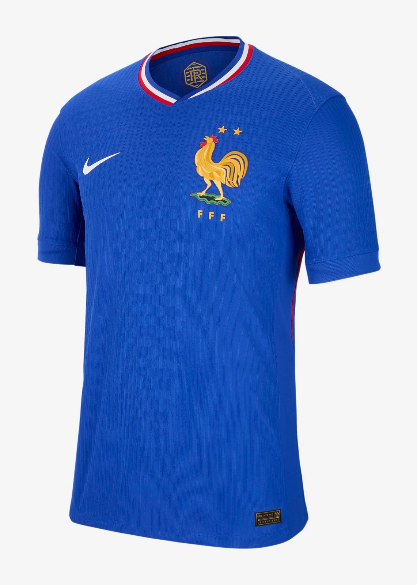

1. Modrić’s Masterclass vs. Argentina
June 21, 2018, Nizhny Novgorod Stadium—43,319 fans for Croatia vs. Argentina, group stage. Luka Modrić, 32, conducts—25th minute, Ante Rebić volleys Willy Caballero’s blunder—1-0. 80th—Modrić picks it up, 25 yards out—curls a screamer past Caballero—2-0. Ivan Rakitić adds late—3-0. Croatia top Group D; Messi’s Argentina teeter.
The stadium roars—Croatia’s checkered sea surges; Modrić jogs, calm. “For the team,” he says; coach Zlatko Dalić beams, “He’s our heart.” Clips flood X—Rebić’s strike, Modrić’s curl—Argentina stunned. “He destroyed us,” Lionel Messi admits; Caballero slumps, “My fault.” Modrić’s magic—Golden Ball looms—sets Croatia’s run to the final.
It’s not flair—it’s control. Modrić’s masterclass—first World Cup final for Croatia—humiliates Messi’s side. “He’s the best,” Xavi tweets; Dalić nods, “Unstoppable.” Fans rewatch—each touch a lesson—2018’s midfield king shines. From 0-0 to 3-0, Modrić’s rocket is Croatia’s pride—Argentina humbled.

2. France’s Final Triumph
July 15, 2018, Luzhniki Stadium Moscow—78,011 fans for France vs. Croatia, final. 18th minute—Mario Mandžukić heads Antoine Griezmann’s free-kick into his own net—1-0. 28th—Ivan Perišić levels, 1-1. 38th—VAR hands France a pen, Griezmann slots—2-1. Second half—Paul Pogba, 59th, 3-1; Kylian Mbappé, 65th, 4-1. Mandžukić pulls one—4-2—but France hold.
The stadium erupts—France’s tricolore waves; Hugo Lloris lifts the cup. “For the nation,” Mbappé grins; coach Didier Deschamps beams, “We’re kings.” Clips flood screens—Mbappé’s strike, VAR call—Croatia bow. “They were clinical,” Modrić admits; Deschamps nods, “Complete.” France’s second title—20 years since ’98—cements a new era.
It’s not just goals—it’s destiny. France’s youth—Mbappé, Pogba—crush Croatia’s dream. “They’re unstoppable,” Pelé tweets; Dalić says, “They earned it.” Fans rewatch—each goal a thrill—2018’s climax, Les Bleus reign. From 1-1 to 4-2, France’s final haul is Russia’s jewel—Croatia’s miracle ends.
3. Mbappé’s Teen Breakout
June 30, 2018, Kazan Arena—42,873 fans for France vs. Argentina, round of 16. Kylian Mbappé, 19, ignites—11th minute, runs 60 yards, wins a pen—Griezmann scores, 1-0. 64th—Mbappé volleys Benjamin Pavard’s cross—3-2; 68th—slots past Franco Armani—4-2. Argentina slump—Messi muted—4-3, Sergio Agüero late, but France advance.
The crowd roars—France’s blue surges; Mbappé sprints, arms wide. “A dream,” he grins; Deschamps beams, “He’s our future.” Clips flood screens—runs, volleys—youngest brace since Pelé ’58. “He’s electric,” Messi admits; Armani slumps, “Too fast.” Mbappé’s four goals—Young Player Award—launch him global—PSG’s star soars.
It’s not the cup—it’s a breakout. Mbappé’s speed—first World Cup—ends Argentina’s run. “He’s a phenomenon,” Pelé says; Deschamps nods, “Unreal.” Fans rewatch—each strike a blur—2018’s teen king rises. From 1-0 to 4-3, Mbappé’s magic is France’s spark—Messi exits.

4. Croatia’s Extra-Time Miracle
July 1, 2018, Nizhny Novgorod—43,319 fans for Croatia vs. Denmark, round of 16. 1-1—Mathias Jørgensen, Mario Mandžukić trade early goals—extra time looms. Penalties—Kasper Schmeichel saves Modrić—Denmark lead. Then Ivan Rakitić steps up—slots past Schmeichel—3-2. Three games, three extra times—quarter-final vs. Russia, pens again—4-3—Croatia march.
The stadium shakes—Croatia’s checkered waves; Rakitić pumps his fist. “For the fans,” he says; Dalić beams, “Pure will.” Clips flood X—Rakitić’s pen, Schmeichel’s dive—smallest final nation since ’50. “They never quit,” Denmark’s Christian Eriksen admits; fans rewatch—each kick a thrill—semi-final vs. England next (2-1). “We’re unbreakable,” Modrić says—history made.
It’s not a goal—it’s grit. Croatia’s run—4.1 million strong—defies odds. “They’re warriors,” Maradona says; Schmeichel nods, “Tough.” 2018’s underdog epic—first final—shocks all. From 1-1 to 3-2, Croatia’s miracle is Russia’s tale—Denmark bows.
5. Pavard’s Stunner vs. Argentina
June 30, 2018, Kazan—same game as Mbappé’s breakout. 2-2—Ángel Di María, Gabriel Mercado stun France—57th minute. Benjamin Pavard, 22, picks up Lucas Hernández’s cross—outside of the boot, 25-yard half-volley—rockets past Armani—2-2. France erupt—Mbappé seals it—4-3—but Pavard’s strike, Goal of the Tournament, shines.
The crowd gasps—then roars; France’s blue waves crash—Pavard sprints, stunned. “Instinct,” he grins; Deschamps beams, “Pure class.” Clips flood screens—ball’s curve, Armani’s dive—2018’s beauty. “Unbelievable,” Messi says; Pavard’s first World Cup goal turns it. “He saved us,” Pogba says—Argentina out.
It’s not the win—it’s art. Pavard’s stunner—Stuttgart’s unknown—ignites France’s run. “He’s a gem,” Pelé tweets; Armani nods, “Perfect.” Fans rewatch—each arc a marvel—2018’s viral hit. From 2-1 down to 4-3, Pavard’s volley is France’s spark—Messi’s dream fades.
6. Mandžukić’s Extra-Time Winner
July 11, 2018, Luzhniki—78,011 fans for Croatia vs. England, semi-final. 1-1—Kieran Trippier’s free-kick, Perišić’s volley—extra time. 109th minute—Ivan Perišić nods on, Mario Mandžukić, 32, pounces—slots past Jordan Pickford—2-1. Croatia hold—first final ever—England slump, third straight semi loss.
The stadium roars—Croatia’s checkered sea drowns England’s chants; Mandžukić roars. “For history,” he growls; Dalić beams, “He’s our rock.” Clips flood screens—Mandžukić’s strike, Pickford’s dive—2018’s clutch moment. “He killed us,” Harry Kane admits; Modrić says, “We believed.” Croatia to France—England bow.
It’s not flair—it’s heart. Mandžukić’s winner—four goals total—lifts Croatia past giants. “He’s a lion,” Maradona says; Pickford nods, “Too sharp.” Fans rewatch—each run a thrill—2018’s semi-final gem. From 1-1 to 2-1, Mandžukić’s dagger is Croatia’s peak—England’s dream dies.